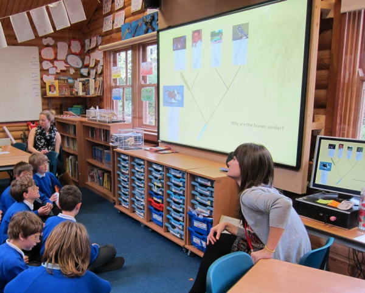

Find out what we have been doing to learn more about teaching evolution in primary schools, in order to continue improving our resources.
Evolution Day at Chandag
19th January 2016
We arranged a brilliant evolution day at a local primary school! Kids from years 3 to 6 participated in three evolution activities and at the end of the day, created fabulous books about “How the Tigers got their stripes”. 270 children participated , and 80% thought the whole day was “loads of fun!”
If you would like to organize an evolution day at your school, get in touch via the About Page.

Lesson 4 successfully trialled
19th May 2014
Lesson plan 4 was trialled in a local school with good success.
We tested the children’s knowledge about evolutionary trees and common ancestors before and 3 weeks after the lesson with a significant increase in understanding.
New evolution board game, obtains 5 times its goal on Kickstart
16th May 2016
In Evolution, players create and adapt their own species in a dynamic ecosystem of limited resources and hungry predators.